Design, Engineered.
A home for brands, interfaces, and creative experiments. By Pedro Julien.
Ideas that don't fit neatly into categories. Some become identities. Some become websites. Some become digital products. Some remain experiments.
What is FFForma?
A place where ideas take form — brands, interfaces, digital products.
Why three F's?
Form Follows Function.
Is it a studio?
Depends.
Is it just one person?
Mostly.
What do you actually do?
Design identities. Build websites and products. Create visual series. Experiment with AI. Make things for the internet.
Why so many forms?
Because curiosity rarely follows a straight line.
Do you take on clients?
Selectively. When the work feels like a good fit.
What I do
- Branding Experiences
- Product Design
- Visuals
- Design Systems
Selected work
-
FFForma
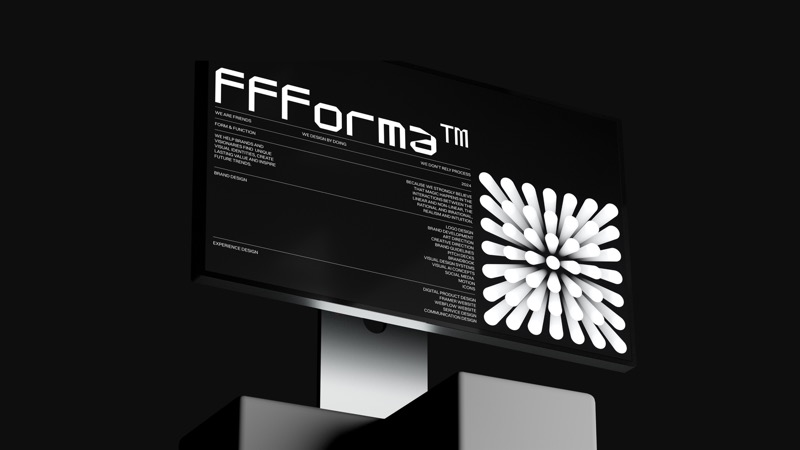
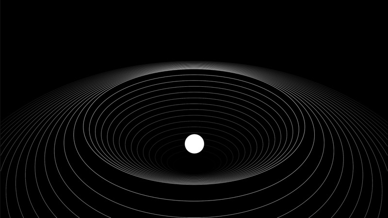
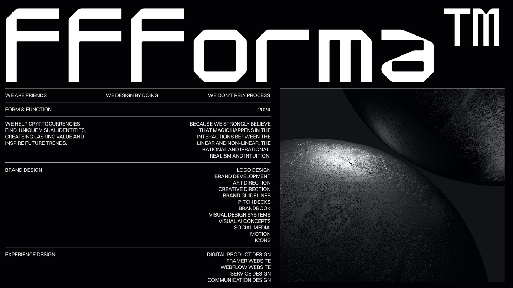
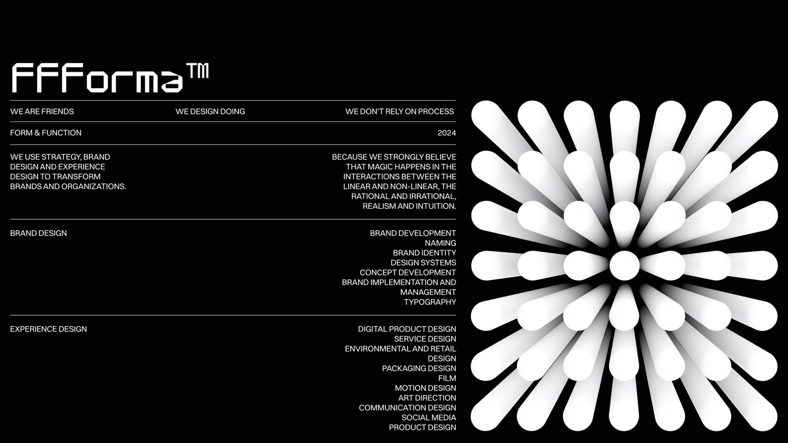
-
Combustion
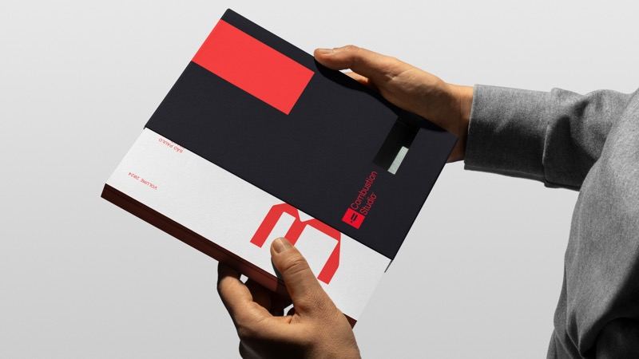
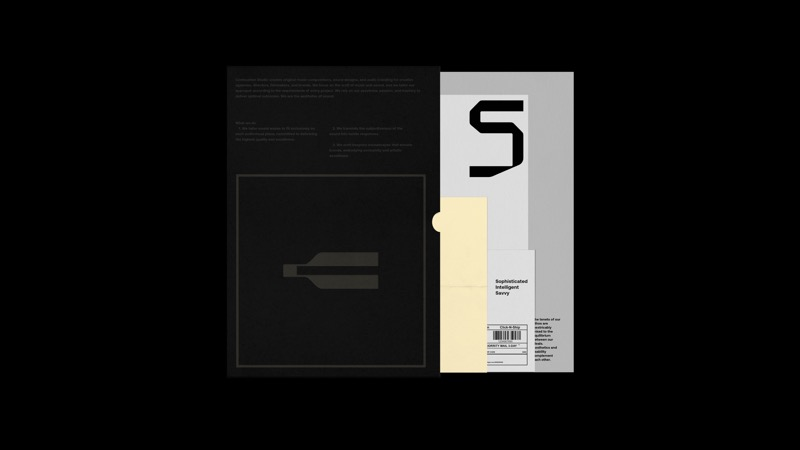
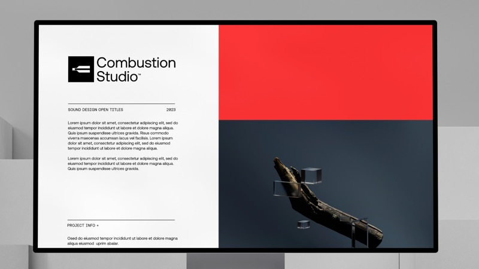
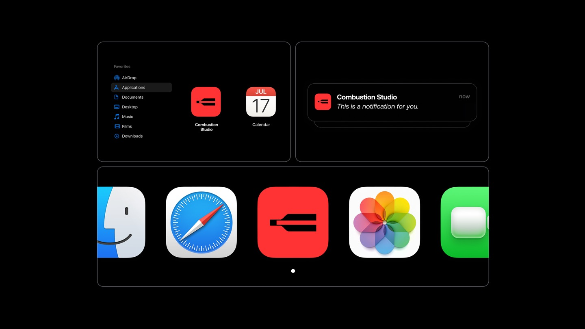
-
Pace
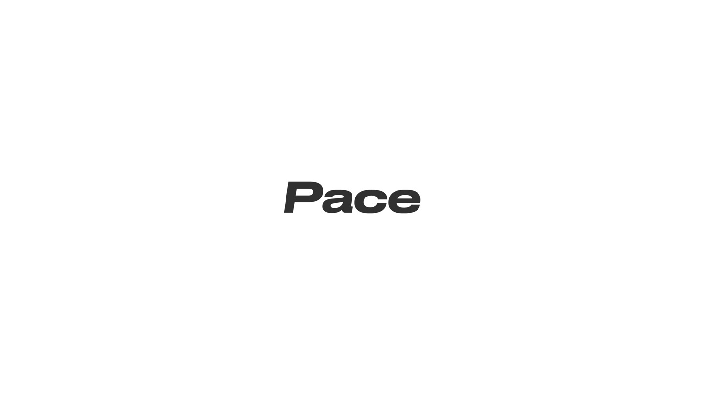
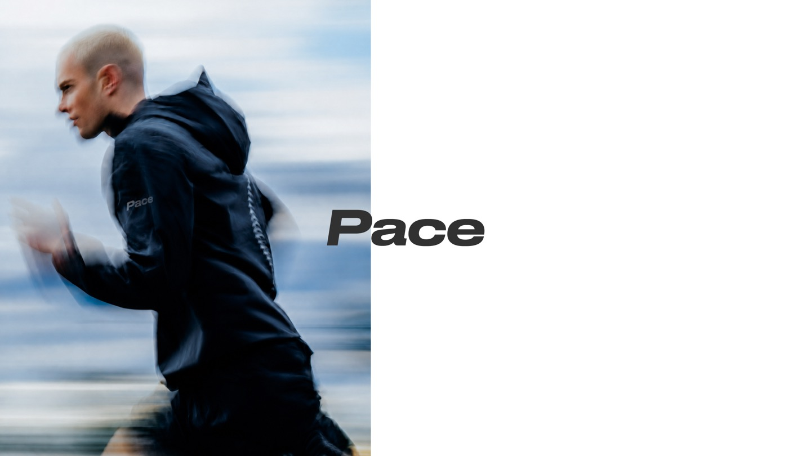
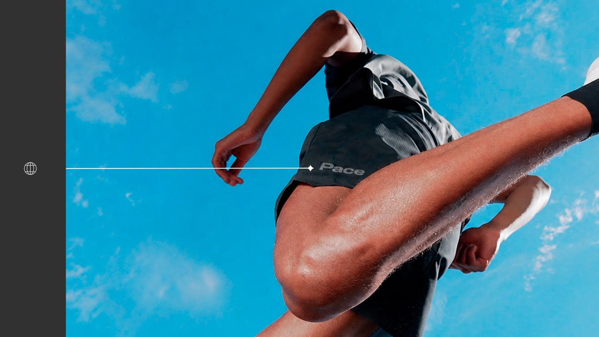
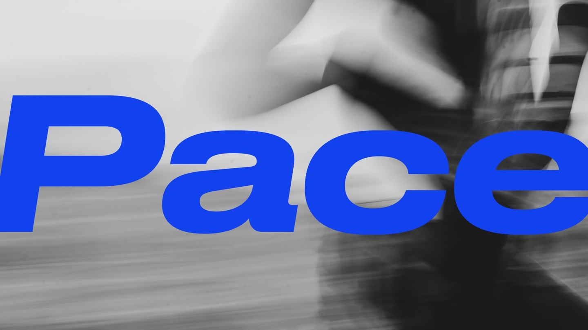
-
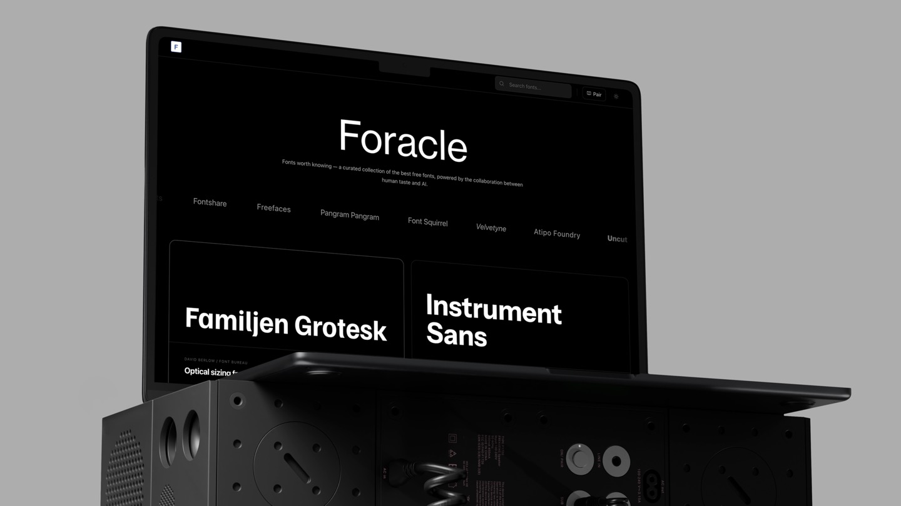
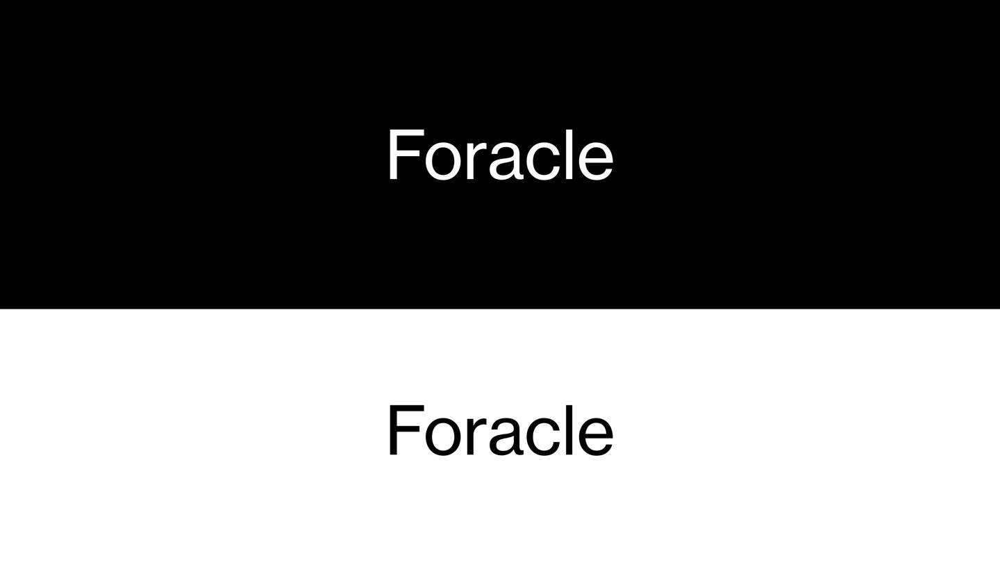
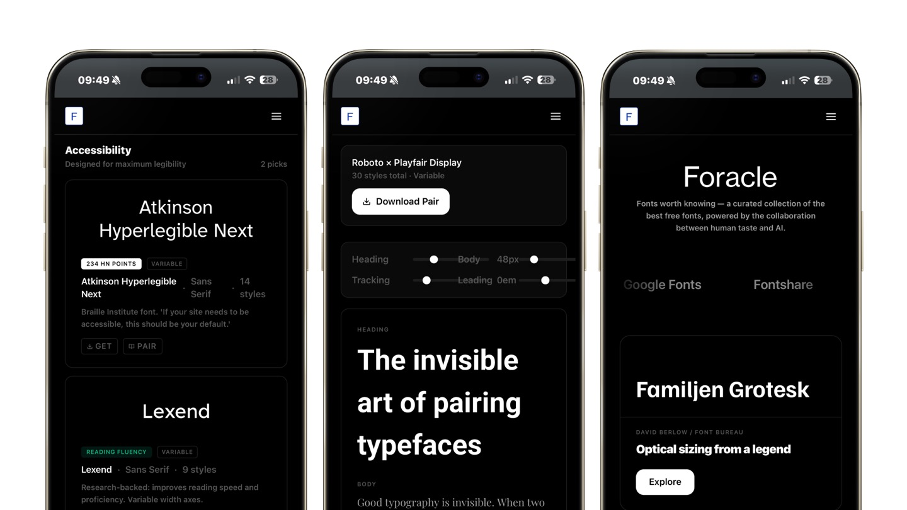
FFForma Experiments
Mentorship
Twenty-plus years inside the technology and design industry. Ten-plus leading design teams. Early adopter of AI. Focused on digital products and brand experiences.
I've helped startups, scale-ups and enterprises improve the way they design and build products — from in-house designers sharpening their craft to founders leveling up their design thinking.
If that sounds like you, I'd love to chat.